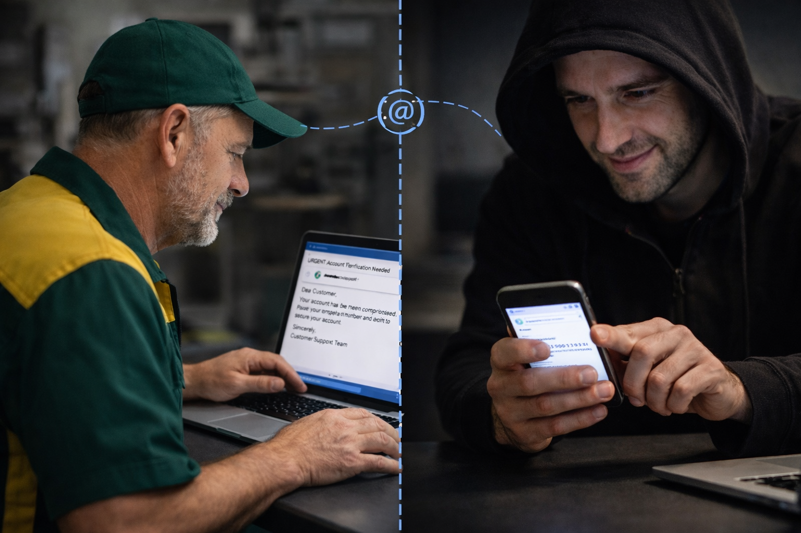
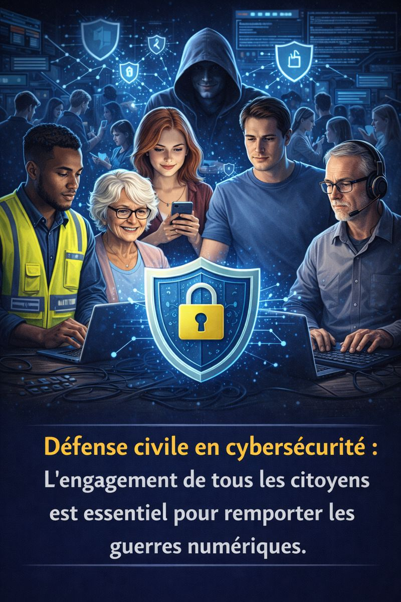
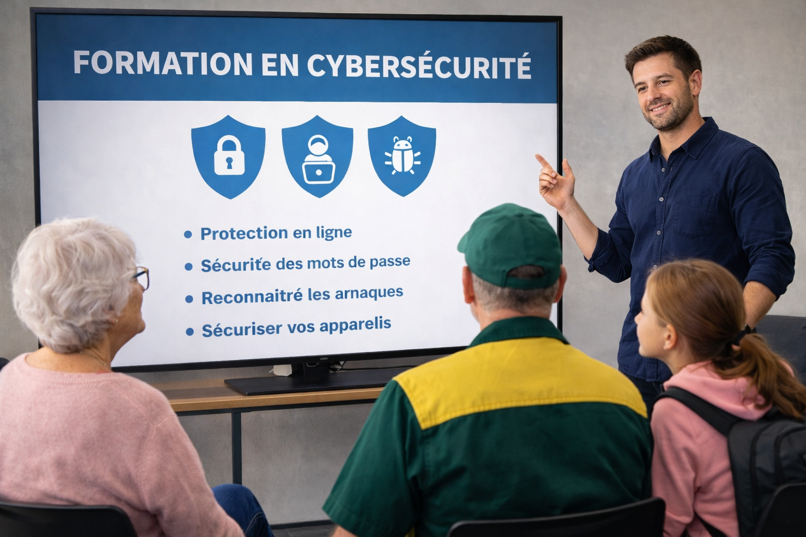

Protection des citoyens face aux menaces en ligne
Sensibiliser les citoyens aux techniques utilisées par les escrocs et renforcer leurs moyens de défense.
Qui êtes-vous ?
Huguette, 74 ans, retraitée.
Totalement autonome dans l’utilisation d’appareils informatiques, elle utilise sa tablette pour jouer en ligne,
préparer son prochain voyage dans le sud, relever ses courriels et accéder à ses comptes bancaires.
Elle entend souvent parler d’escroqueries en ligne dans les médias, mais ne sait pas quelles mesures concrètes
elle pourrait prendre pour s’en protéger.
Anthony, 28 ans, jeune professionnel à son compte.
Travaille à distance en tant que spécialiste en effets spéciaux dans l’industrie du jeu vidéo.
Il utilise son équipement informatique à titre personnel comme professionnel.
Il s’inquiète des impacts potentiels d’une attaque par rançongiciel sur son activité,
de la protection de ses crypto-monnaies,
et de sa responsabilité personnelle en cas de fuite de données confidentielles d’un client
si l’un de ses actifs informatiques était compromis.
Réjean, 58 ans, commis dans un magasin de bricolage.
Il utilise un ordinateur à la maison pour le divertissement (jeux en ligne), accéder à ses comptes bancaires et faire des achats en ligne.
Il se sent souvent perdu face aux problèmes informatiques qu’il rencontre au quotidien, mais s’inquiète de ces innombrables escroqueries en ligne dont il entend parler dans les nouvelles. Bien qu'il essaie de suivre quelques recommandations trouvées sur internet,
il les trouve compliquées et difficiles à mettre en œuvre, d’autant plus que son intérêt pour l'informatique est très limité. Il préférerait bénéficier de conseils de vive voix et d'un accompagnement personnalisé pour l'aider à renforcer sa sécurité en ligne.
Anne-Sophie, 12 ans, collégienne, et ses parents.
Dispose d’un téléphone et d’une tablette sur lesquels elle joue en ligne avec ses amis, et utilise divers réseaux sociaux pour communiquer avec eux.
Elle se connecte sur le réseau wifi familial, qu’utilisent aussi ses parents quand ils travaillent à distance.
Ces derniers s’inquiètent des menaces en ligne que pourrait subir leur fille,
et se demandent si les jeux gratuits qu’elle télécharge ne contiennent pas des virus qui pourraient se propager à tous les appareils informatiques domestiques.
- Toutes et tous font un usage quotidien de leurs appareils connectés, ont conscience que leurs activités en ligne ne sont pas sans risque, et aimeraient s’assurer qu’ils sont correctement protégés.
- Submergés par un flot d’informations sur la meilleure conduite à tenir, ils peinent toutefois à s’y retrouver, et pensent que la mise en place d’une protection efficace n’est pas dans leur champ de compétences naturelles. Après tout, ils n’ont pas eu besoin d’acquérir des compétences avancées en électricité pour pouvoir utiliser des appareils électriques domestiques en toute sécurité.
La fraude en 2025-2026
Selon le Centre antifraude du Canada, plus de 23,000 victimes de fraudes ont été recensées au Canada sur les 9 premiers mois de l’année 2025, représentant une perte financière de 544M$. À ce chiffre, il convient d’ajouter le nombre de cas non déclarés, par ignorance des institutions à contacter ou, trop souvent, par sentiment de honte d’avoir été piégé.
Les criminels usent de nombreux stratagèmes pour parvenir à leurs fins, alliant ingénierie sociale(*) et exploitation des vulnérabilités techniques des appareils et logiciels utilisés par leurs victimes.
Qu’il s’agisse de tentatives d’hameçonnage par courriel ou texto, d’appels vocaux frauduleux, de faux dépannages informatiques, de fraudes sentimentales, de harcèlement en ligne, de faux livreurs ou de faux policiers, les criminels font preuve d’une imagination débordante pour vous piéger. Les incidents de cybersécurité se concrétisant par une perte financière, un vol d’identité ou de l’intimidation font malheureusement désormais partie de notre quotidien, et leurs conséquences peuvent être dramatiques.
L’ingénierie sociale est un ensemble de techniques de manipulation utilisées par un criminel pour tromper les gens et leur faire révéler des informations confidentielles, comme des mots de passe ou des numéros de carte bancaire, ou pour les pousser à faire quelque chose de dangereux, comme cliquer sur un lien malveillant. Ces techniques exploiteront toute la palette des sentiments humains (peur, confiance, empressement, solitude, …) pour permettre au criminel de parvenir à ses fins.
La réponse de l’industrie à ces défis
“Gestionnaire de mots de passe, authentification multi-facteurs (2FA), sauvegardes hors ligne, modification des configurations par défaut des appareils connectés, gestion des privilèges, mises à jour des systèmes d’exploitation et des logiciels, etc..”

Cette liste d‘outils non exhaustive révèle une réalité : l’industrie propose de nombreuses solutions techniques, pour répondre a des problèmes techniques ou pour réduire le risque qu’un utilisateur s’y trouve exposé.
Elle soulève toutefois deux questions fondamentales :
- Les actions à réaliser par l’usager pour identifier le bon outil, dans le bon contexte, et le mettre en œuvre en pratique, nécessite souvent des connaissances que nos quatre personnages fictifs estiment ne pas posséder, à tort ou à raison. 
- Si les outils en question les protégeront généralement très bien des risques techniques associés à leurs appareils et applications, ils ne pourront rien contre le hacking du cerveau humain, aussi nommé « ingénierie sociale ».
Peu importe que le mot de passe choisi pour votre application bancaire respecte les recommandations courantes (longueur et complexité), si vous le transmettez au faux « conseiller bancaire » et véritable cybercriminel avec lequel vous êtes actuellement en communication téléphonique.
Comprenons-nous bien : ces outils de protection sont absolument fondamentaux, ils constituent un filet de protection très efficace pour prévenir les attaques les plus courantes dont vous pourriez être la victime.
MAIS il serait éminemment dangereux (et totalement faux) de croire que l’on peut transférer l’entière responsabilité de la gestion de nos mauvaises pratiques numériques à des outils, aussi efficaces soient-ils.
Leur utilisation n’est en aucun cas une invitation à cliquer sans discernement sur des liens douteux, ou à communiquer ses informations personnelles à un interlocuteur sans avoir pris la peine de vérifier qu’il est bien la personne qu’il prétend être.
Pour vous protéger au mieux contre les menaces en ligne qui vous guettent, vous aurez non seulement besoin d’outils efficaces, mais aussi de vigilance et d’un bon jugement!
Une défense civile pour mieux protéger nos communautés
Il est illusoire d’imaginer une société civile protégée et résiliente, si la majorité de ses citoyens n’est pas pleinement engagée face aux menaces numériques. Une armée de spécialistes et un arsenal d’outils sophistiqués pourront sans nul doute gagner des batailles, mais certainement pas une guerre, s’ils ne bénéficient de l’appui d’une défense civile consciente des enjeux, entraînée et parfaitement organisée. 
Mes services pour les citoyens
Formation de sensibilisation aux dangers en ligne. Accompagnement personnalisé.

Par le biais d’ateliers en petits groupe ou de rencontres individuelles, en présentiel ou en appel vidéo, nous passerons en revue les points essentiels à considérer pour améliorer immédiatement votre sécurité en ligne, tout en vous aidant à développer une culture de cybersécurité pratique.
• Nous aborderons toutes les questions qui vous préoccupent. Aucune n’est stupide.
• Les poser représente une partie du chemin vers la solution recherchée.
L’objectif est de vous aider à développer une saine vigilance et d’améliorer aussi vite que possible vos défenses contre les acteurs malveillants.
Vérification et sécurisation de votre environnement numérique.
• Sécuriser vos appareils électroniques (téléphone, tablette, appareils intelligents)
• Sécuriser votre réseau local,
• Sécuriser vos comptes courriel,
• Implémenter l’authentification multi-facteurs pour vos comptes en ligne critiques,
• Choisir et implémenter des stratégies de sauvegarde de vos fichiers sensibles.
N’hésitez pas à me soumettre vos situations spécifiques, que nous étudierons ensemble au cas par cas en vue de trouver la meilleure solution.
Soutien pendant ou après une fraude ou une tentative de fraude
À qui s’adressent mes services ?
Ils s’adressent notamment aux:
• aînés, souvent ciblés par des escroqueries téléphoniques ou bancaires,
• familles, soucieuses de protéger leurs proches,
• citoyens non techniques, qui souhaitent comprendre et renforcer leur sécurité sans nécessairement devenir experts,
• proches aidants, qui accompagnent un parent ou un proche vulnérable.
Une approche humaine, bienveillante et confidentielle
• N’importe qui peut être victime d’une fraude, y compris les professionnels en cybersécurité les plus aguerris. Elle ne doit en aucun cas être un sujet de honte dont vous n’osez parler. La honte n’a pas à être portée par la victime, elle n’appartient qu’à l’escroc qui a choisi le vol pour mode de vie.
• Soyez certain que votre situation sera abordée sans jugement. Je suis à vos côtés pour vous accompagner, pas pour vous juger.
• La confidentialité de votre situation est garantie. Ce qui se dit entre nous reste entre nous, sauf ce que vous décidez de dévoiler vous-même auprès de votre entourage. La confidentialité est un pilier fondateur des métiers de la cybersécurité, elle s’applique bien entendu à notre collaboration.
• Mon discours est adapté au niveau de chacun et la pédagogie au cœur de ma démarche: aucune connaissance préalable n’est requise. Notre intérêt commun est de vous permettre de progresser dans votre compréhension du monde numérique qui nous submerge. Je m’engage à vous aider dans cette démarche avec des mots simples et à franchir les paliers un à un, un pas à la fois.
Vous souhaitez être accompagné ?
Si vous avez une crainte sur votre sécurité numérique, ou simplement l’envie de prendre en main votre protection, je vous invite à prendre contact avec moi.
Ensemble, nous ferons en sorte que votre environnement technologique ne soit plus une source d’inquiétudes.
✉️ Me contacter : contact@sqltemp.com